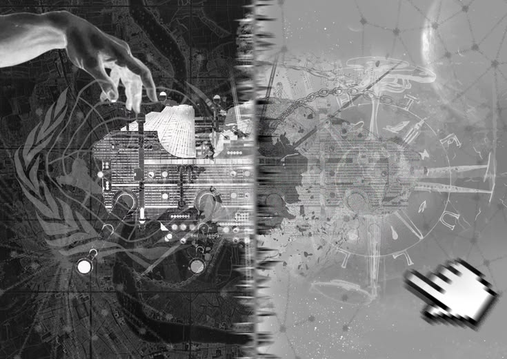
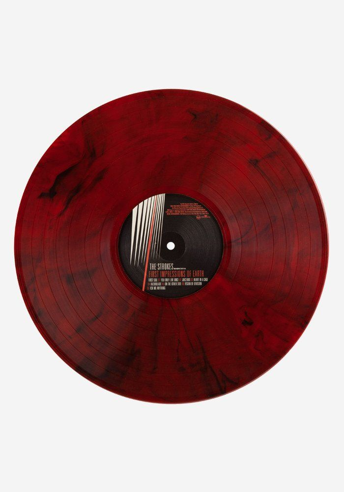

0%
正在建立灵枢链接…
终端 ID: QYXH-2026-001 · 链路加密中
· 监测预警司：旧城区巡线区段已重新锁定，外勤三队例行巡检中
· 玄理科研院：编号 LC-Q-039「天极」已完成例行灵质校准，十三骨效果表已下发各小队
· 玄理科研院：新一期《实验记录》已归档——「逢雨」「灵枢」「天极」「落羽」「狂骨」例行实验完成，含事故备案 2 起、意外 3 起
· 监测预警司：《异化体图鉴》更新至 9 类，新增「井底之物」「引路伪物」观测条目，请外勤阅毕签收
· 收容物保管司：通报——LC-W-045「纸嫁衣」已自殡葬店事件现场回收，庚阶管控，禁止外借
· 外勤行动司：行动代号「归影」已完结——无主之影回收完成，旧纸厂片区风险等级下调
· 认知防护司：请各司局于本周五前提交一季度认知污染处置报告
· 认知防护司：提醒——凡夜间巡逻，随身携带旧伞、银针、桃木片，三样缺一不可
· 外勤行动司：提示——梧桐巷西段路面裂缝扩大，请市民绕行，勿在裂缝上驻足
· 监测预警司：梧桐巷民俗社观测点能量读数平稳，维持长期观测
· 玄理科研院：本月已完成「墟门」片区首次低频探测，报告待局内复核
· 认知防护司：密级提示——涉及「三院」「墟门」等关键词的公开讨论，请各员注意尺度
· 觉醒者管理司：下周起恢复每周四晚觉醒者锚点例行自检，请各小队按时上报

---

回复